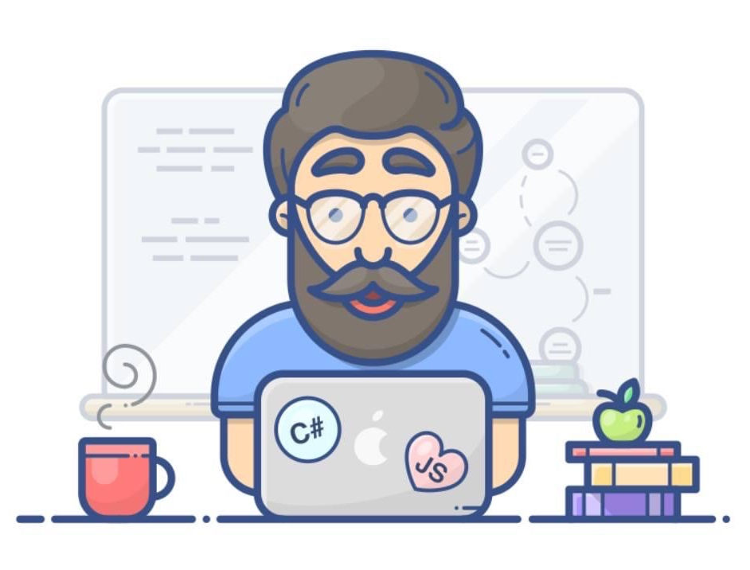

<div class="container col-xxl-8 px-4 py-5">
    <div class="row flex-lg-row-reverse align-items-center g-5 py-5">
      <div class="col-10 col-sm-8 col-lg-6">
        
      </div>
      <div class="col-lg-6">
        <h1 class="display-5 fw-bold lh-1 mb-3">Sim, eu estou quase Morrendo de tando <span class="fw-bolder text-primary">Estudar</span>!</h1>
        <p class="lead fw-semibold" >Você acha que ser Dev é fácil?? tenho tanto caminho ainda para percorrer que acho melhor dar uma paradinha para o café! <span class="fw-bolder text-primary">Servido</span>?</p>
        <p class="lead fw-semibold">Ah, quer saber o que fiz até aqui? Clica em "<span class="fw-bolder text-primary">inspecionar</span>" ou apenas aperte <span class="fw-bolder text-primary">F12</span> do seu teclado e descubra!</p>
      </div>
    </div>
  </div>
